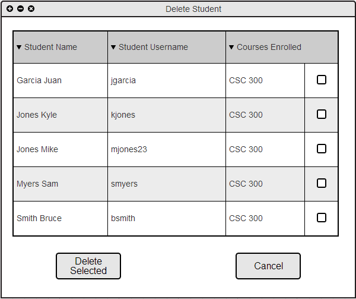
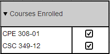
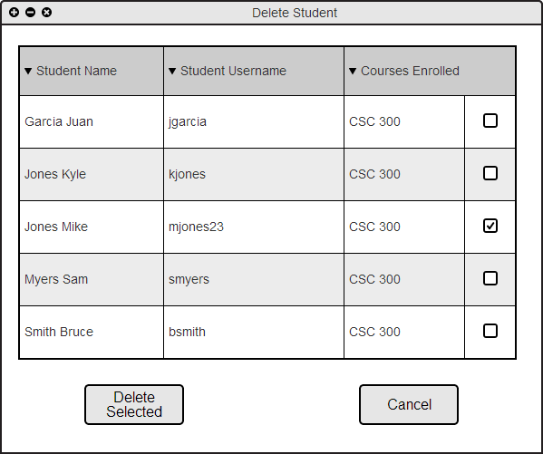
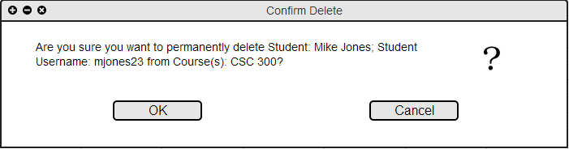
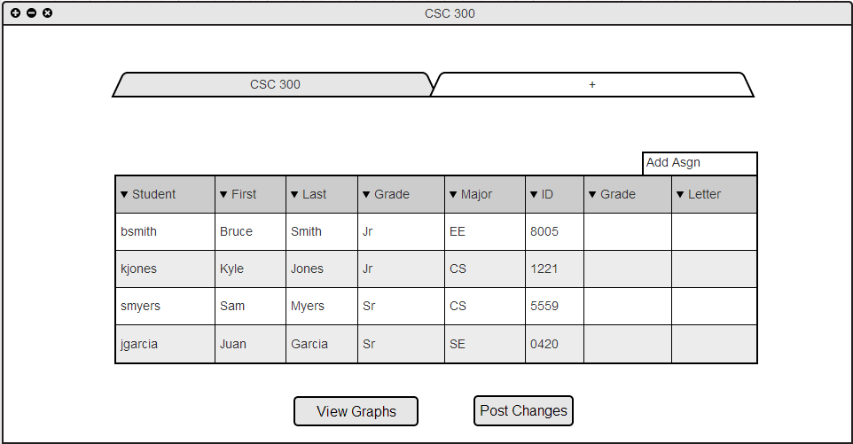

When the user navigates the toolbar "Student->Delete Student" the system responds with the dialog shown in Figure 2.3.J.

Figure 2.3.J: Delete Student dialog.
All students enrolled in the user's courses will be initially displayed on the Delete Student dialog box. The top column allows the user to sort his or her students based on Student Name, Student ID, or Courses Enrolled. The user selects the checkbox corresponding to the student they wish to remove from their roster. If a student is enrolled in multiple courses, each course will have its own checkbox as shown in Figure 2.3.K below.

Figure 2.3.K: Delete Student Mulitple Courses dialog.
The user selects the check box corresponding to the student and course he or she wishes to remove. Figure 2.3.L below shows checked boxes.

Figure 2.3.L: Delete Student Filled dialog.
The Delete Selected button will cause a confirmation dialog box to pop up, as shown in Figure 2.3.M

Figure 2.3.M: Confirm Delete Student dialog.
Selecting the OK button permanently deletes the student listed from the rosters of the courses checked. Their entire records, including their personal information and all grades, are permanently deleted from the application. The roster automatically updates, making changes from the roster shown in Figure 2.3.I from the previous Edit Student section. The result of deleting a student mjones23 from this roster is shown in Figure 2.3.N below.
Selecting the Cancel button closes the Confirm Delete Student dialog and redirects the user back to the original Delete Student Dialog (Figure 2.2.3.F).

Figure 2.3.N: Roster Post Delete Student.
Figure 2.3.N above shows Username: mjones23 removed from the CSC 300 class roster.